Heya '-')/ Ich bin Zetsu, (Stand März 2025) 22 Jahre alt, Student für Informatik. Ich liebe es zu programmieren, Welten und Charaktere zu schreiben, D&D zu spielen, Japanisch zu lernen, und zu essen.
/* TODO */
Dinge, die mich interessieren
Softwareentwicklung
Ich beschäftige mich in meiner Freizeit, wie man vielleicht an dem Fakt, dass ich eine persönliche Website gebastelt habe, merkt, viel mit Themen der Informatik. Da ich gefühlt Endstufe Parkinson habe, ist mir das präzise Herumfummeln an kleinen Hardware-Bauteilchen leider mehr oder weniger vergönnt. Dafür allerdings kann ich den lieben langen Tag vor einem Bildschirm sitzen und unlesbaren Code schreiben, bei dem ich selbst binnen einer Woche wieder vergessen habe, wie dieser noch gleich funktionierte.

Besonders faszinierend finde ich, wie es Entwicklern in der NES-, SNES- und N64-Ära gelungen ist, komplexe Spiele auf extrem eingeschränkter Hardware zu erschaffen. Diese Herausforderung und die damit verbundene Notwendigkeit zur Optimierung haben mich stark beeinflusst. Ich versuche, diesen Ansatz in meiner eigenen Arbeit zu verfolgen: Code sollte effizient und einfach sein. Leider führt die nahezu unbegrenzte Rechenleistung moderner Geräte oft dazu, dass der Fokus auf Code-Optimierung verloren geht, und viele Entwickler greifen schnell zu Frameworks und trivialen Bibliotheken. Ein Zitat von Terry A. Davis, dem Entwickler von TempleOS, hat mich dabei besonders geprägt: “An idiot admires complexity, a genius admires simplicity.” (Ich distanziere mich jedoch ausdrücklich von den problematischen Aussagen, die Davis durch seine Schizophrenie getätigt hat.) Für mich gilt der Leitsatz: Einfachheit ist das ultimative Ziel.
Altes Internet
Das Internet ist eine tolle Erfindung. Auch wenn man in meinem Heimatland das Internet nach Aussagen der damaligen Bundeskanzlerin noch als Neuland erschließen muss, bin ich für meinen Teil sehr früh in meinem Leben mit dem Internet in Berührung gekommen. Damals noch hauptsächlich für Videospiel-Komplettlösungen und die damaligen rudimentären 2010-Ära-YouTube-Videos, ist es aus meinem heutigen Alltag nicht mehr wegzudenken. Allein was mir das Internet für Möglichkeiten gegeben hat an neuen Dingen zu lernen, Bekanntschaften zu schließen, meine Zeit zu verschwenden. Aber leider ist, aus meiner Sicht, das heutige Internet nicht mehr das, was es einst war und wie ich es als Kind kennengelernt habe. Alles ist mit penetranter Werbung vollgeklatscht, fünfzehntausend Cookie-Zustimmungs-Banner, AI-Slop und "Professionalisierung" durch große Konzerne. Die Zeiten von GeoCities oder Angelfire, in denen jeder eine komplett persönliche Website für sich bastelte, sind bedauerlicherweise vorbei. Alles wird von den großen Social-Media-Plattformen bestimmt. Sonst gibt es nicht mehr viel zu entdecken. Der "Wilde Westen" ist Geschichte.
Um dieser harten Realität zu entfliehen, liebe ich es, mir das Gefühl des nostalgischen Internets der 90er und frühen 2000er zurückzuholen; was etwas hoch gegriffen klingt, da ich zu jenen Zeiten, trotz fortschreitender Altersbeschwerden, noch nicht geboren war. Tut dies was zur Sache? Ne. Ich wurde beispielsweise für einigen NeoCities-Websites inspiriert diese Website zu erstellen, als gemerkt habe, dass es Leute da draußen gibt, die meine Ansichten teilen. 88x31-Buttons, krustige GIFs und Bilder mit starker Komprimierung und Farb-Dithering haben einfach etwas bezauberndes, kunstvolles an sich.
Auch aber die Subkulturen, die sich in diesen Zeiten des Internets gebildet haben, auf Foren und in IRC-Chats, auf Image Boards und über Torrenting-Link-Seiten, finde ich super spannend. Über die Jahre holt man alles wichtige auf, daher sind mir solche illustren Erscheinungen wie die Anleitung für DIY-Kristalle auf 4chan oder diverse Creepypastas bekannt. Interessant wird es dort, wo die Sprachbarriere beginnt. Die endlos vielen Geschichten von 2chan zum Beispiel oder legendäre Videos von NicoNicoDouga, die es dann auch mit der Zeit auf YouTube geschafft haben. Gerade da ist es aber interessant, wie sich gewisse Dinge parallel über den Globus durch kulturelle und sprachliche Unterschiede entwickelt haben. Die legendäre YouTube-Kacke-Zeit hier im Westen und die MADs aus Japan in etwa.
Touhou Project
Es gibt viele schräge Ecken im Internet. Das haben wir ja im vorherigen Abschnitt etabliert. Und dann gibt es Touhou. Eine Danmaku-/Shmup-/Bullet-Hell-Spielereihe, deren Schwierigkeitsgrad zwischen "Easy Mode? Disgusting." und "Touhou is a fair game :)" liegt. Entwickelt wurden die Spiele seit den 90ern von einer einzigen Person namens ZUN, der gleichzeitig Programmierer, Komponist und Designer ist. Es wirkt fast schon ironisch, dass eines der größten Kultphänomene Japans im Indie-Game-Bereich von einem absolut based Mann stammt, der sich hauptsächlich mit überdimensionalen Biergläsern ablichten lässt.
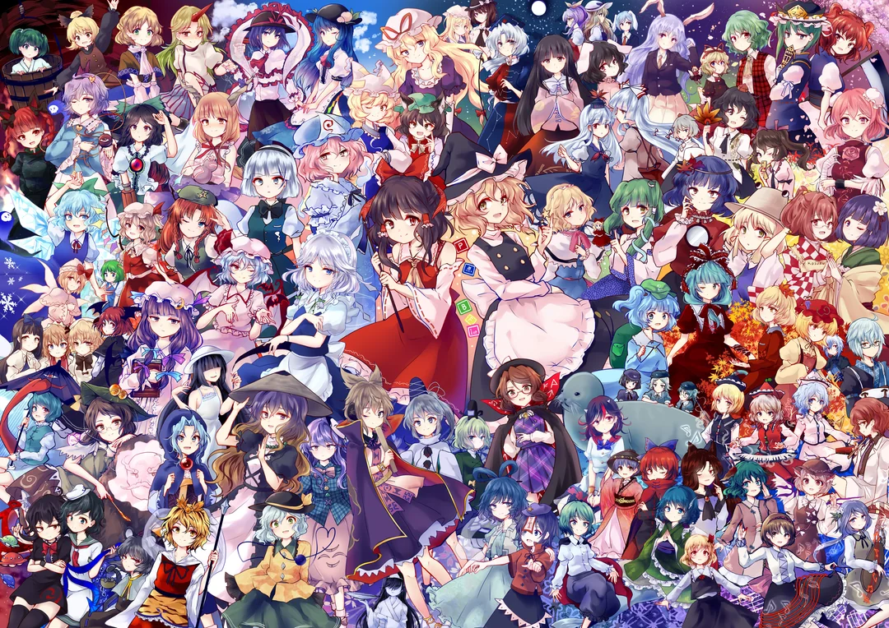
Touhou ist dabei mehr als nur ein Spiel. Es ist eine eigene Welt. Wenn ich irgendwo das Gefühl von Fan-Zusammenhalt des "alten Internets" nochmal zu spüren bekomme, dass in der Touhou-Community. Fan-Games, Fan-Songs, Fan-Manga, Fan-Anime, alles. Zahlreiche Doujin-Circles haben sich durch Touhou jahrzehntelang bis heute einen Namen gemacht, darunter COOL&CREATE mit BEATMARIO oder IOSYS. Auch die unzähligen Charaktere sind so ikonisch. Mit minimalster Vorgabe von Eigenschaften verschiedener Charaktere durch ZUN, entwickeln die Fans ihren eigenen Canon, der oftmals von ZUN selbst wieder aufgegriffen wird. Die unzähligen Insider innerhalb der Community sind zu Legenden im Internet geworden, die auch außerhalb der Grenzen der Touhou-Community bekannt werden. Man kann nicht im Internet unterwegs sein ohne nicht einmal "Bad Apple!!" gehört zu haben.
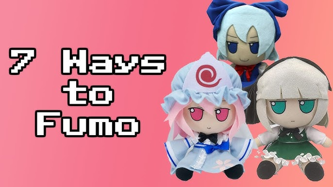
Was natürlich ebenfalls nicht fehlen darf, sind die Fumos. Für alle die nicht wissen was Fumos sind, hier eine Erklärung von ChatGPT: "Fumos" sind hochqualitative, plüschartige Stoffpuppen, die Charaktere aus Touhou Project darstellen. Sie stammen ursprünglich aus Japan und wurden von der Doujin-Gruppe Gift hergestellt. Die Puppen sind besonders bekannt für ihren chibihaften (niedlichen) Stil und ihren großen Kopf, die ikonische Augenform und die sitzende Pose. Ich bin bereits zu tief im Rabbit Hole drin, als das ich aufhören könnte immer mehr Fumos in meine Familie aufzunehmen.
Dungeons & Dragons
Irgendwann im Leben kommt jeder Mensch mal an den Punkt, an dem er sich denkt: „Was wäre, wenn ich mit einer Gruppe Freunden einmal die Woche in einen imaginären Keller voller Monster steigen würde, um dort mit einem halbblinden Kobold über Steuerrecht zu diskutieren?“ Willkommen bei Dungeons & Dragons.

Ich bin Spielleiter. Also: Der arme Mensch, der sich monatelang den Kopf zerbricht, um eine halbwegs schlüssige Fantasy-Welt zu bauen, die dann in der ersten Session von einem Chaoten mit Feuerball-Stufe-3 und einem leeren IQ-Wert komplett gesprengt wird. Klingt frustrierend? Ist es auch. Aber es ist die gute Sorte Frust. Zu jeder Gruppe gehört schließlich auch der optimistische Held, der kurz vorm Burnout steht, die zurückhaltende Waldläuferin, die sich nicht traut Personen anzusprechen, diese aber ohne zu zögern in ihre Bauklötze zerlegen würde, der edgy Zauberer, der alles kann (bis auf wie eine normale Person in sozialen Umfelden interagieren), der manisch-schizophrene Dieb, dessen Allzwecklösungen Verspeisen oder Abstechen sind und schließlich die stets betrunkene Mönch-Elfe, die auf Alkoholentzug betrunken wird.
Das Leiten einer D&D-Kampagne ist für mich eine seltsame Mischung aus Weltenbau, Improvisationstheater, Regeljonglage und Krisenintervention. Mal bist du Gott, mal bist du Google Translate für Witze auf Zwergisch. Du planst epische Schlachten und emotionale Story-Beats – und bekommst stattdessen einen spontanen Hühner-Entführungskrimi, weil die Party beschlossen hat, dass das Dorfmaskottchen „verdächtig guckt“.
Trotzdem (oder gerade deshalb?) ist es unfassbar befriedigend. Du bastelst dir deine eigene Welt zusammen, bevölkerst sie mit Charakteren, gibst ihnen Konflikte, Motivationen, Geheimnisse – und dann lässt du deine Freunde mit diesem Chaos interagieren. Und egal, wie gut oder schlecht es läuft, es wird immer eine Geschichte, an die man sich erinnert. So ein bisschen wie ein Fiebertraum, nur mit mehr Würfeln und weniger Delirium (je nach Situation).
Das Schönste daran ist aber, dass man als Spielleiter auch selbst lernt. Über Storytelling, über Gruppen-Dynamiken, über Erwartungsmanagement und, ganz wichtig: über die Tatsache, dass kein Plan je den Erstkontakt mit Spielern überlebt. Man lernt, loszulassen. Dinge geschehen zu lassen. Sich über unerwartete Wendungen zu freuen. Und wenn alles den Bach runtergeht – einfach improvisieren. Oder einen Drachen aus dem Hut zaubern.
Ich liebe das Spielleiten, weil es mir die Möglichkeit gibt, kreativ zu sein, ohne dafür perfekt sein zu müssen. Weil es mir erlaubt, mit anderen zusammen eine Geschichte zu erzählen, die in keinem Buch und auf keinem Bildschirm existiert – nur in unseren Köpfen. Und weil ich dabei endlich legal sadistisch sein darf, ohne dass jemand das Jugendamt ruft.
/* TODO */
Lieblingscharaktere
Nicht nur das Schreiben von eigenen Charakteren, sondern auch das Wertschätzen der Charaktere von anderen Autoren und Künstlern ist mir sehr wichtig. Dabei ist es eine Mischung aus Charakterdesign und -geschichte.
Lieblingsfilme
Ich schaue nicht allzu viele Filme, daher ist die Liste recht knapp.
 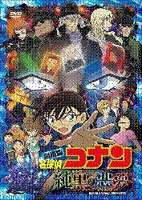
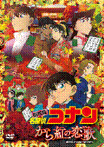
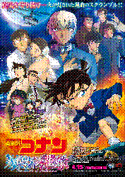
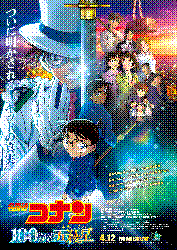
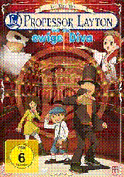
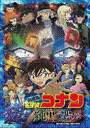
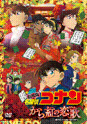
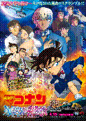
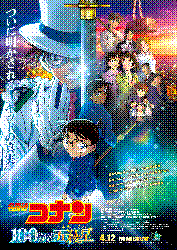
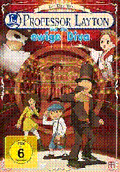
Sonstige Favoriten-Listen
Videospiele
Anno 1602, Anno 1503, Half-Life 2, Mario Kart 8 Deluxe, Portal 1, Portal 2, Rayman Legends, Super Smash Bros. Ultimate, The Legend of Zelda: Link's Awakening DX, The Legend of Zelda: Majora's Mask, The Legend of Zelda: The Minish Cap, The Legend of Zelda: Twilight Princess, WarioWare Gold
Videospielkonsolen
DSi XL, Game Boy Color, Super Nintendo Entertainment System, Wii
Serien
Another, Baka to Test, Bocchi the Rock!, Code Geass, Death Note, Detektiv Conan, Food Wars, Horimiya, JoJo's Bizarre Adventure, Kaguya-sama, Konosuba, Miss Kobayashi's Dragon Maid, Mushoku Tensei, Neon Genesis Evangelion, Psycho Pass, Sousou no Frieren, SpongeBob, Steins;Gate, The Devil is a Part-Timer
Interpreten/Bands
FAKE TYPE., DYES IWASAKI, KANKAN, kiyosumi, usedcvnt, BEATMARIO, DECO*27, Kikuo, Houshou Marine, Alligatoah, PANXI, TUYU, YOASOBI
Soundtracks
Anno 1602, Anno 1503, Anno 1404, Octopath Traveler, Pokémon Diamant/Perl/Platin, Pokémon Gold/Silber/Kristall, Professor Layton und die Verlorene Zukunft, Sousou no Frieren, Super Mario Galaxy, The Legend of Zelda: A Link to the Past, The Legend of Zelda: The Minish Cap, The Legend of Zelda: Twilight Princess, Steins;Gate, Steins;Gate 0, Jump King, Persona 3, Persona 4, Persona 5
Pokémon
Gengar, Morlord, Ho-Oh, Hydropi, Tengulist, Altaria, Milotic, Banette, Rayquaza, Chelast, Frodedje, Darkrai, Shaymin, Dressella, Skelabra, Quajutsu, Trombork, Bauz, Colossand, Schlapfel, Mortipot, Olangaar, Oghnatoll, Halupenjo, Granforgita, Fatalitcha
Essen
Döner, Jägerschnitzel, Rosenkohl, Spätzle, Wildbraten, Bismarckhering, Katsu Kare, Kare Udon, Yakitori, Tonkatsu, Takoyaki, Gelbes Thai Curry
Getränke
Asahi™ Super Dry, Dr Pepper™ (das Getränk der Intellektuellen), Eistee (Grüntee-Limette / Schwarztee-Pfirsich-Hibiskus), Karbonisiertes Wasser, Cappucino, Red Bull™ Purple Edition, Riegele™ Spezi
Farben
#9894d4 (Lavendel), #1a2129 (Schwarzblau), #312137 (Saphirblau), #512839 (Purpurviolett), #713141 (Bordeauxviolett), #2d162c (Stahlblau), #412752 (Nachtblau), #683a68 (Blaulila), #9775a6 (Perlviolett), #ba5044 (Perlrosa)
Tiere
Katzen, Capybaras, Shiba-inus